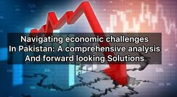
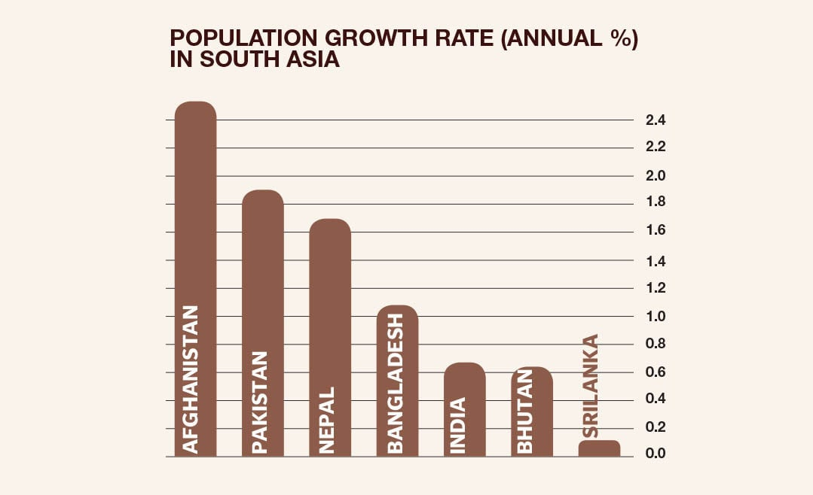
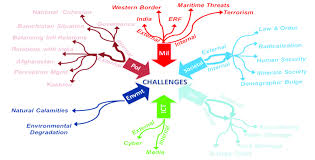
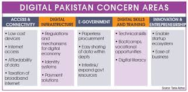

Challenges Facing Pakistan
   Pakistan faces a range of interconnected challenges that hinder its progress and development across economic, political, social, and environmental domains. Economically, the country is burdened by a significant debt crisis, which limits its ability to invest in essential sectors like education, health, and infrastructure. High inflation has severely impacted the purchasing power of ordinary citizens, while unemployment, especially among the youth, remains a pressing issue. Energy shortages and inconsistent economic policies further disrupt industrial growth and deter local and foreign investment, creating a cycle of economic stagnation. Politically, Pakistan struggles with instability and weak governance. Corruption is pervasive, eroding public trust in institutions and impeding effective decision-making. The complex civil-military relationship has historically undermined democratic progress, while inefficiencies in the judicial system delay justice and weaken the rule of law. These factors contribute to a lack of accountability and hinder institutional reform, further deepening the political challenges the country faces. Socially, Pakistan grapples with a severe education crisis. Millions of children are out of school, and those enrolled often face a lack of resources and low-quality instruction. Healthcare is another area of concern, with underfunded public systems leaving vast portions of the population without access to basic medical services. Gender inequality remains a persistent issue, limiting women’s contributions to the economy and society, while marginalized communities and minorities face systemic discrimination and exclusion. Environmental challenges further compound the country’s difficulties. Pakistan is one of the most vulnerable countries to climate change, experiencing frequent floods, droughts, and rising temperatures that disrupt agriculture and livelihoods. Water scarcity, caused by mismanagement and overuse, threatens food security and access to clean drinking water. Pollution, deforestation, and the lack of sustainable practices exacerbate environmental degradation, posing serious risks to public health and economic stability. Finally, the rapidly growing population places immense pressure on infrastructure, resources, and services. Urban areas face overcrowding and insufficient facilities, while rural regions struggle with poverty and a lack of basic amenities. Addressing these challenges requires visionary leadership, transparent governance, effective policy implementation, and active participation from all citizens to pave the way for a prosperous and resilient Pakistan. Pakistan currently faces various challenges, including political instability, corruption, and economic struggles. These issues impact the quality of life for citizens and hinder the country's progress. However, with the right leadership and vision, these challenges can be overcome.
As a politician, I aim to address these problems head-on by advocating for reforms, transparency, and a government that is accountable to its people.